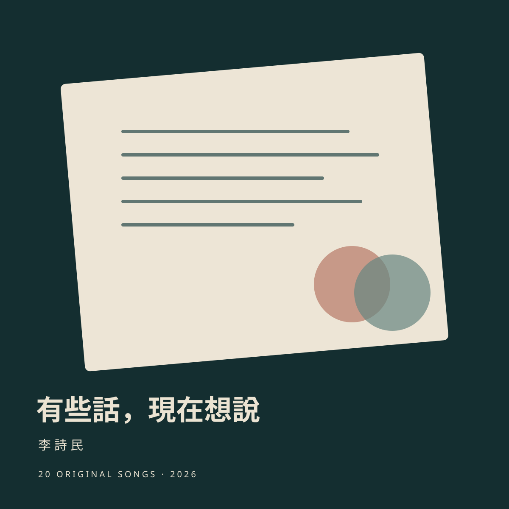

<!doctype html><html lang="zh-Hant"><meta charset="utf-8"><meta name="viewport" content="width=device-width,initial-scale=1"><title>有些話，現在想說｜李詩民</title><style>body{margin:0;background:#142e30;color:#ebe3d2;font:16px/1.8 system-ui}main{max-width:1000px;margin:auto;padding:40px 24px}.hero{display:grid;grid-template-columns:280px 1fr;gap:36px;align-items:center}img{width:100%;border-radius:8px}h1{font-size:36px;line-height:1.4}a{color:#d2ad91}ol{list-style:none;padding:0}li{padding:22px 0;border-bottom:1px solid #ffffff30}strong{font-size:20px}audio{display:block;width:100%;margin-top:12px}small{display:block;opacity:.8}@media(max-width:650px){.hero{grid-template-columns:1fr}.hero img{max-width:300px}h1{font-size:30px}}</style><main><section class="hero"><div><small>李詩民 · 20 首原創國語歌曲 · 2026.10.16</small><h1>有些話，現在想說</h1><p>有些話，今天開始好好說。</p><p>2026 年 10 月 16 日公開發行，歡迎播放與下載。</p><a href="/?album=words-to-say&track=1">開啟黑膠播放器</a> · <a href="assets/audio/words-to-say/words-to-say-album.zip" download>整張專輯 ZIP</a></div></section><ol><li><strong>01 有些話，現在想說</strong><small>有些話 現在想說 · 3:32</small><audio controls preload="none" src="assets/audio/words-to-say/track01.mp3"></audio><a href="assets/audio/words-to-say/track01.mp3" download="01-有些話，現在想說.mp3">下載 MP3</a></li><li><strong>02 你叫我名字的時候</strong><small>你叫我名字的時候 · 2:48</small><audio controls preload="none" src="assets/audio/words-to-say/track02.mp3"></audio><a href="assets/audio/words-to-say/track02.mp3" download="02-你叫我名字的時候.mp3">下載 MP3</a></li><li><strong>03 第二次約會</strong><small>第二次約會 · 2:31</small><audio controls preload="none" src="assets/audio/words-to-say/track03.mp3"></audio><a href="assets/audio/words-to-say/track03.mp3" download="03-第二次約會.mp3">下載 MP3</a></li><li><strong>04 把喜歡說得清楚</strong><small>把喜歡說得清楚 · 2:42</small><audio controls preload="none" src="assets/audio/words-to-say/track04.mp3"></audio><a href="assets/audio/words-to-say/track04.mp3" download="04-把喜歡說得清楚.mp3">下載 MP3</a></li><li><strong>05 你的習慣，我的例外</strong><small>你的習慣 我的例外 · 2:52</small><audio controls preload="none" src="assets/audio/words-to-say/track05.mp3"></audio><a href="assets/audio/words-to-say/track05.mp3" download="05-你的習慣，我的例外.mp3">下載 MP3</a></li><li><strong>06 兩個人的時差</strong><small>兩個人的時差 · 2:42</small><audio controls preload="none" src="assets/audio/words-to-say/track06.mp3"></audio><a href="assets/audio/words-to-say/track06.mp3" download="06-兩個人的時差.mp3">下載 MP3</a></li><li><strong>07 我們不是不相愛</strong><small>我們不是不相愛 · 3:06</small><audio controls preload="none" src="assets/audio/words-to-say/track07.mp3"></audio><a href="assets/audio/words-to-say/track07.mp3" download="07-我們不是不相愛.mp3">下載 MP3</a></li><li><strong>08 那句話說重了</strong><small>那句話說重了 · 3:17</small><audio controls preload="none" src="assets/audio/words-to-say/track08.mp3"></audio><a href="assets/audio/words-to-say/track08.mp3" download="08-那句話說重了.mp3">下載 MP3</a></li><li><strong>09 先聽你說完</strong><small>先聽你說完 · 2:47</small><audio controls preload="none" src="assets/audio/words-to-say/track09.mp3"></audio><a href="assets/audio/words-to-say/track09.mp3" download="09-先聽你說完.mp3">下載 MP3</a></li><li><strong>10 對不起，不加但是</strong><small>對不起 不加但是 · 3:22</small><audio controls preload="none" src="assets/audio/words-to-say/track10.mp3"></audio><a href="assets/audio/words-to-say/track10.mp3" download="10-對不起，不加但是.mp3">下載 MP3</a></li><li><strong>11 如果當時抱住你</strong><small>如果當時抱住你 · 3:35</small><audio controls preload="none" src="assets/audio/words-to-say/track11.mp3"></audio><a href="assets/audio/words-to-say/track11.mp3" download="11-如果當時抱住你.mp3">下載 MP3</a></li><li><strong>12 分開以後的星期五</strong><small>分開以後的星期五 · 3:13</small><audio controls preload="none" src="assets/audio/words-to-say/track12.mp3"></audio><a href="assets/audio/words-to-say/track12.mp3" download="12-分開以後的星期五.mp3">下載 MP3</a></li><li><strong>13 不再借朋友問你</strong><small>不再借朋友問你 · 2:33</small><audio controls preload="none" src="assets/audio/words-to-say/track13.mp3"></audio><a href="assets/audio/words-to-say/track13.mp3" download="13-不再借朋友問你.mp3">下載 MP3</a></li><li><strong>14 祝福還需要練習</strong><small>祝福還需要練習 · 3:15</small><audio controls preload="none" src="assets/audio/words-to-say/track14.mp3"></audio><a href="assets/audio/words-to-say/track14.mp3" download="14-祝福還需要練習.mp3">下載 MP3</a></li><li><strong>15 我也值得被喜歡</strong><small>我也值得被喜歡 · 3:05</small><audio controls preload="none" src="assets/audio/words-to-say/track15.mp3"></audio><a href="assets/audio/words-to-say/track15.mp3" download="15-我也值得被喜歡.mp3">下載 MP3</a></li><li><strong>16 再靠近一點點</strong><small>再靠近一點點 · 2:47</small><audio controls preload="none" src="assets/audio/words-to-say/track16.mp3"></audio><a href="assets/audio/words-to-say/track16.mp3" download="16-再靠近一點點.mp3">下載 MP3</a></li><li><strong>17 和你商量以後</strong><small>我想和你商量以後 · 3:13</small><audio controls preload="none" src="assets/audio/words-to-say/track17.mp3"></audio><a href="assets/audio/words-to-say/track17.mp3" download="17-和你商量以後.mp3">下載 MP3</a></li><li><strong>18 平常也說我愛你</strong><small>平常也說我愛你 · 2:52</small><audio controls preload="none" src="assets/audio/words-to-say/track18.mp3"></audio><a href="assets/audio/words-to-say/track18.mp3" download="18-平常也說我愛你.mp3">下載 MP3</a></li><li><strong>19 下次吵架以前</strong><small>下次吵架以前 · 2:47</small><audio controls preload="none" src="assets/audio/words-to-say/track19.mp3"></audio><a href="assets/audio/words-to-say/track19.mp3" download="19-下次吵架以前.mp3">下載 MP3</a></li><li><strong>20 我願意，再說一次</strong><small>我願意 再說一次 · 3:18</small><audio controls preload="none" src="assets/audio/words-to-say/track20.mp3"></audio><a href="assets/audio/words-to-say/track20.mp3" download="20-我願意，再說一次.mp3">下載 MP3</a></li></ol></main></html>